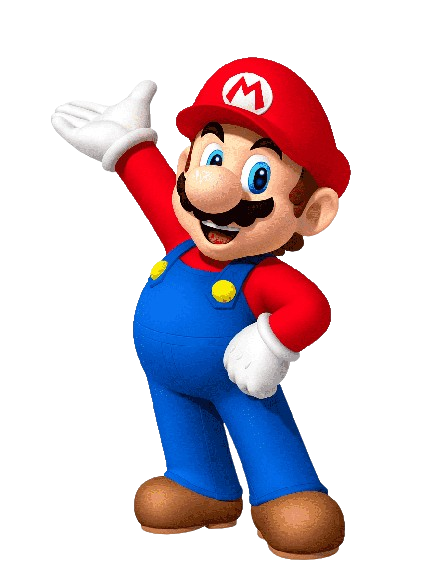
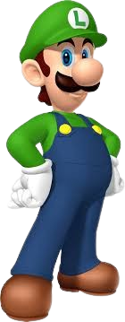
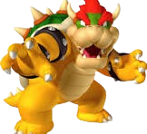

O Super Mario é um dos personagens mais icônicos e amados da história dos videogames. Criado pela Nintendo, Mario fez sua primeira aparição em 1981 no jogo "Donkey Kong" como "Jumpman", um carpinteiro que deve resgatar sua amada Pauline das garras de um gorila malvado.
Desde então, Mario evoluiu para se tornar o protagonista de uma das franquias mais bem-sucedidas e duradouras da indústria de jogos eletrônicos. Ele é conhecido por suas aventuras no Reino dos Cogumelos, onde enfrenta desafios variados para salvar a Princesa Peach das garras de seu arqui-inimigo, Bowser.
Mario é caracterizado por seu design simples e reconhecível, com um boné vermelho, bigode espesso, macacão azul e camisa vermelha. Além dos jogos principais da série "Super Mario", ele também aparece em diversos spin-offs e séries, como "Mario Kart", "Mario Party" e "Mario Tennis", entre outros.
Além de sua popularidade nos videogames, Mario se tornou um ícone cultural, aparecendo em filmes, séries animadas, produtos licenciados e até mesmo em parques temáticos da Nintendo. Sua influência na cultura pop é imensa, e sua capacidade de cativar gerações de jogadores continua forte até hoje.
Em resumo, Super Mario não é apenas um personagem de videogame; ele é um símbolo de diversão, aventura e nostalgia para milhões de pessoas ao redor do mundo, deixando um legado duradouro na história dos videogames.

O jogo que estabeleceu o gênero de plataforma side-scrolling e introduziu muitos elementos icônicos da série.
Introduziu novas mecânicas de jogo, como o uso de power-ups e um mapa de mundo não linear.
Lançado para o Super Nintendo, expandiu o conceito com novos power-ups e um mundo mais vasto para explorar.
Um marco em 3D, onde os jogadores exploram o castelo da Princesa Peach em busca de Estrelas de Poder.
Mario usa um dispositivo de jato para limpar a ilha Delfino e resolver um mistério.
Mario explora planetas e galáxias para salvar a Princesa Peach de Bowser.
Um jogo de mundo aberto onde Mario viaja pelo mundo para resgatar Peach de Bowser mais uma vez, usando seu chapéu Cappy para assumir o controle de inimigos e objetos.

Uma série de jogos de corrida onde Mario e seus amigos competem usando karts.
Jogos de tabuleiro com minijogos onde Mario e outros personagens da Nintendo competem em festas.
Jogos de esportes onde Mario e seus amigos competem em partidas de tênis ou golfe.
Inclui jogos como "Super Mario RPG: Legend of the Seven Stars" e "Paper Mario", que combinam elementos de RPG com a jogabilidade tradicional do Mario.
RPGs de ação onde Mario e Luigi exploram diferentes reinos e enfrentam desafios.
Jogos de plataforma que combinam elementos clássicos com novas mecânicas.
Inclui jogos como "Mario Strikers" (futebol), "Mario Hoops 3-on-3" (basquete) e outros.
Inclui jogos como "Dr. Mario" e "Mario vs. Donkey Kong", que são baseados em quebra-cabeças e desafios de lógica.

Telefone: (18) 99999-9999
E-mail: SuperMario@Nintendo.com